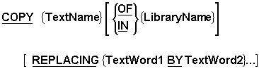

-
Introduction
Unit aims, objectives, prerequisites. -
Using COPY statements
Introduction to theCOPYverb. Using theCOPYverb when creating large software systems -
The COPY verb - Syntax and Semantics
TheCOPYsyntax. How theCOPYworks. How theREPLACINGphrase works.COPYrules. -
COPY examples
Four example programs showing the program source text before processing theCOPYstatements, the copy library text, and the program source text after processing theCOPYstatements in the program.
Introduction
In a large software system it is often very useful to be able keep record, file and table
descriptions in a central source text library and then to import those descriptions into the
programs that require them. In COBOL the
COPY verb allows us to do this.
This unit introduces the COPY verb.
It describes some problems of large software systems which use of the
COPY helps to alleviate.
It introduces the syntax of the COPY verb and discusses
how the COPY verb, and in particular they
COPY..REPLACING, works.
It introduces the notion of a text word and describes the role that these play in matching
the text in the REPLACING phrase with the text in the
library file.
The unit ends with a number of example programs.
By the end of this unit you should -
-
Be aware of some of the advantages of using the COPY verb.
-
Understand what a text word and be able to identify text words in library text.
- Be able to use the COPY.. REPLACING to copy source text from a library file and replace sections of it as required.
- Introduction to COBOL
- Declaring data in COBOL
- Basic Procedure Division commands
- Selection in COBOL
- Iteration in COBOL
- Introduction to Sequential files
- Processing Sequential files
- Edited Pictures
- The USAGE clause
- COBOL print files and variable-length records
- Sorting and Merging
- Introduction to direct access files
- Relative Files
- Indexed Files
- Using tables
- Creating tables - syntax and semantics
- Searching tables
- CALLing subprograms
Using the COPY verb
COPY statements in a COBOL program are very different
from other COBOL statements. While other statements are executed at run time,
COPY statements are executed at compile time.
A COPY statement is similar to the "Include" used in
languages like C and C++. It allows programs to include frequently used source code text.
When a COPY statement is used in a COBOL program the
source code text is copied into the program from from a copy file or from a copy library
before the program is compiled.
A copy file, is a file containing a segment of COBOL code.
A copy library, is a collection code segment each of which can be referenced using a name.
Each program that wants to use items described in the copy library uses the
COPY verb to include the descriptions it requires.
When COPY statements include source code in a program,
the code can be included without change or the text can be changed as it is copied into the
program. The ability to change the code as it being included greatly adds to the versatility
of the COPY verb.
The COPY verb is generally used when creating large
software systems. These systems are subject to a number of problems that the
COPY verb helps to alleviate.
For instance, when data files are used by a number of programs in a large software system, it is easy for programmers describing those files to make errors in defining the key fields (Indexed files) or the file organization or the type of access allowed or the number, type and size of the fields in a record. Any errors in these descriptions may result in difficult-to-find bugs. For instance, if one program writes a file using an incorrect record description and the others read it using the correct description, a program crash may occur in in one of the correct subprograms rather than the one which actually has the problem.
Using copy libraries or files helps to reduce programmer transcription errors and also makes implementation simpler by reducing the amount of coding required. For instance, when a number of programs need to access the same file, the relevant file and record descriptions can be copied from a copy library instead of each programmer having to type their own (and possibly get them wrong).
Another advantage of using copy libraries is that they permit item descriptions such as
file, record and table descriptions, to be kept and updated centrally in a copy library,
often under the control of a copy librarian. This makes it more difficult for programmers to
make ad hoc changes to file and record formats. Such changes generally have to be approved
by the COPY librarian.
In a large software system using the COPY verb makes some maintenance tasks easier and safer. Certain changes may only require an update to the text in the copy library and a recompilation of any affected programs. If a copy library were not used each affected program would have to be changed
The COPY verb
Syntax and Semantics

Text Words
The matching procedure in the
REPLACING phrase operates on text words.
A text word is defined as ;
-
Any COBOL text enclosed in double equal signs (e.g. ==ADD 1==). This text is known
as PseudoText and it allows us to replace a series of words or characters as opposed
to an individual identifier, literal or word.
-
Any literal including opening and closing quotes
-
Any separator other than;
A space
A Pseudo-Text delimiter
A Comma
-
Any COBOL reserved word
- Any Identifier.
-
Any other sequence of contiguous characters bounded by separators.
Text Word examples
MOVE
1 Text Word
MOVE Total TO Print-Total
4 Text Words - MOVE Total TO Print-TotalMOVE Total TO Print-Total.
5 Text Words - MOVE Total TO Print-Total .PIC S9(4)V9(6)
9 Text words - PIC S9 ( 4 ) V9 ( 6 )"PIC S9(4)V9(6)"
1 Text word - "PIC S9(4)V9(6)"
If the REPLACING phrase is not used the compiler simply
copies the text into the client program without change.
If the COPY does use the
REPLACING phrase the text is copied and each occurrence
of TextWord1 in the library text is replaced by the corresponding TextWord2 in
the REPLACING phrase.
Some example COPY statements
COPY CopyFile2 REPLACING XYZ BY 120.
COPY CopyFile5 REPLACING X(3) BY X(19).
COPY CopyFile3 IN EGLIB.
COPY CopyFile5 REPLACING ==X(3)== BY ==X(19)==.
COPY CopyFile4 IN EGLIB.
The REPLACING phrase tries to match the TextWord1 items
with text words in the library text.If a match is achieved, then as the text is copied from
the library, the matched text is replaced by the TextWord2 items.
For purposes of matching, each occurrence of aseparator comma, semicolon, space or comment line in the library text or in TextWord1 is considered to be a single space.
Each sequence of one or more space separators is also considered to be a single space.
Comment lines in the library text is or in TextWord2 are copied into the target text unchanged.
-
When TextWord1 is PseudoText it must not be null, nor can it consist solely of either
the character space(s) or comment lines.
-
When TextWord2 is PseudoText it can be null. Null PseudoText is indicated by four equal
signs (e.g. ====)
-
A
COPYstatement can occur anywhere a character-string or a separator can occur except that aCOPYstatement must not occur within anotherCOPYstatement.
-
TextName defines a unique external filename which conforms to the rules for user defined
words.
-
If the word
COPYappears in a comment-entry or in the place where a comment entry can appear, it is considered part of the comment-entry.
-
The text produced as a result of the complete processing of a
COPYstatement must not contain aCOPYstatement.
-
Normally a textword in the copy text is replaced by a textword in the replacement text
but it is possible to replace only part of a text-word by enclosing the text to be
replaced by either parentheses or colons.
For example - (Prefix) or :Prefix:
COPY examples
>>SOURCE FORMAT IS FREE
IDENTIFICATION DIVISION.
PROGRAM-ID. COPYEG1.
AUTHOR. Michael Coughlan.
ENVIRONMENT DIVISION.
FILE-CONTROL.
SELECT StudentFile ASSIGN TO "STUDENTS.dat"
ORGANIZATION IS LINE SEQUENTIAL.
DATA DIVISION.
FILE SECTION.
FD StudentFile.
COPY COPYFILE1.
PROCEDURE DIVISION.
BeginProg.
OPEN INPUT StudentFile
READ StudentFile
AT END SET EndOfSF TO TRUE
END-READ
PERFORM UNTIL EndOfSF
DISPLAY StudentNumber SPACE StudentName SPACE
CourseCode SPACE FeesOwed SPACE AmountPaid
READ StudentFile
AT END SET EndOfSF TO TRUE
END-READ
END-PERFORM
STOP RUN.
01 StudentRec.
88 EndOfSF VALUE HIGH-VALUES.
02 StudentNumber PIC 9(7).
02 StudentName PIC X(60).
02 CourseCode PIC X(4).
02 FeesOwed PIC 9(4).
02 AmountPaid PIC 9(4)V99.
>>SOURCE FORMAT IS FREE
IDENTIFICATION DIVISION.
PROGRAM-ID. COPYEG1.
AUTHOR. Michael Coughlan.
ENVIRONMENT DIVISION.
FILE-CONTROL.
SELECT StudentFile ASSIGN TO "STUDENTS.dat"
ORGANIZATION IS LINE SEQUENTIAL.
DATA DIVISION.
FILE SECTION.
FD StudentFile.
COPY CopyFile1.
01 StudentRec.
88 EndOfSF VALUE HIGH-VALUES.
02 StudentNumber PIC 9(7).
02 StudentName PIC X(60).
02 CourseCode PIC X(4).
02 FeesOwed PIC 9(4).
02 AmountPaid PIC 9(4)V99.
PROCEDURE DIVISION.
BeginProg.
OPEN INPUT StudentFile
READ StudentFile
AT END SET EndOfSF TO TRUE
END-READ
PERFORM UNTIL EndOfSF
DISPLAY StudentNumber SPACE StudentName SPACE
CourseCode SPACE FeesOwed SPACE AmountPaid
READ StudentFile
AT END SET EndOfSF TO TRUE
END-READ
END-PERFORM
STOP RUN. >>SOURCE FORMAT IS FREE
IDENTIFICATION DIVISION.
PROGRAM-ID. COPYEG2.
AUTHOR. Michael Coughlan.
DATA DIVISION.
WORKING-STORAGE SECTION.
01 NameTable.
*>See note1
COPY CopyFile2 REPLACING XYZ BY 120.
01 CopyData.
*>See note2
COPY CopyFile3 IN EGLIB
REPLACING ==R== BY ==4==.
*>See note3
COPY CopyFile4 REPLACING ==V99== BY ====.
*>See note4
COPY CopyFile5 REPLACING "KEY" BY "ABC".
*>See note5
COPY CopyFile5 REPLACING KEY BY ABC.
*>See note6
COPY CopyFile5 REPLACING "CustKey" BY "Cust".
*>See note7
COPY CopyFile5 REPLACING "KEY" BY =="ABC".
02 CustNum PIC 9(8)==.
PROCEDURE DIVISION.
BeginProg.
STOP RUN.
02 StudName PIC X(20) OCCURS XYZ TIMES.
02 CustOrder PIC 9(R).
02 CustOrder2 PIC 9(6)V99.
02 CustKey PIC X(3) VALUE "KEY".
>>SOURCE FORMAT IS FREE
IDENTIFICATION DIVISION.
PROGRAM-ID. COPYEG2.
AUTHOR. Michael Coughlan.
DATA DIVISION.
WORKING-STORAGE SECTION.
01 NameTable.
*>See note1
COPY CopyFile2 REPLACING XYZ BY 120.
02 StudName PIC X(20) OCCURS 120 TIMES.
01 CopyData.
*>See note2
COPY CopyFile3 IN EGLIB
REPLACING ==R== BY ==4==.
02 CustOrder PIC 9(4).
*>See note3
COPY CopyFile4 REPLACING ==V99== BY ====.
02 CustOrder2 PIC 9(6).
*>See note4
COPY CopyFile5 REPLACING "KEY" BY "ABC".
02 CustKey PIC X(3) VALUE "ABC".
*>See note5
COPY CopyFile5 REPLACING KEY BY ABC.
02 CustKey PIC X(3) VALUE "KEY".
*>See note6
COPY CopyFile5 REPLACING "CustKey" BY "Cust".
02 CustKey PIC X(3) VALUE "KEY".
*>See note7
COPY CopyFile5 REPLACING "KEY" BY =="ABC".
02 CustNum PIC 9(8)==.
02 CustKey PIC X(3) VALUE "ABC".
02 CustNum PIC 9(8).
PROCEDURE DIVISION.
BeginProg.
STOP RUN.
>>SOURCE FORMAT IS FREE
IDENTIFICATION DIVISION.
PROGRAM-ID. COPYEG3.
AUTHOR. Michael Coughlan.
DATA DIVISION.
WORKING-STORAGE SECTION.
01 CopyData.
*>See note1
COPY CopyFile5 REPLACING ( BY @.
*>See note2
COPY CopyFile5 REPLACING 3 BY three.
*>See note3
COPY CopyFile5 REPLACING ) BY &.
*>See note4
COPY CopyFile5 REPLACING X BY ==Replace the X==.
*>See note5
COPY CopyFile5 REPLACING ==X(3)== BY ==X(19)==.
*>See note6
COPY CopyFile5 REPLACING X(3) BY X(19).
*>See note7
COPY CopyFile5 REPLACING PIC BY ==Pic is Replaced==.
*>See note8
COPY CopyFile5 REPLACING P BY ==But P in PIC not replaced==.
PROCEDURE DIVISION.
BeginProg.
STOP RUN.
02 CustKey PIC X(3) VALUE "KEY".
>>SOURCE FORMAT IS FREE
IDENTIFICATION DIVISION.
PROGRAM-ID. COPYEG3.
AUTHOR. Michael Coughlan.
DATA DIVISION.
WORKING-STORAGE SECTION.
01 CopyData.
*>See note1
COPY CopyFile5 REPLACING ( BY @.
02 CustKey PIC X@3) VALUE "KEY".
*>See note2
COPY CopyFile5 REPLACING 3 BY three.
02 CustKey PIC X(three) VALUE "KEY".
*>See note3
COPY CopyFile5 REPLACING ) BY &.
02 CustKey PIC X(3& VALUE "KEY".
*>See note4
COPY CopyFile5 REPLACING X BY ==Replace the X==.
02 CustKey PIC Replace the X(3) VALUE "KEY".
*>See note5
COPY CopyFile5 REPLACING ==X(3)== BY ==X(19)==.
02 CustKey PIC X(19) VALUE "KEY".
*>See note6
COPY CopyFile5 REPLACING X(3) BY X(19).
02 CustKey PIC X(19) VALUE "KEY".
*>See note7
COPY CopyFile5 REPLACING PIC BY ==Pic is Replaced==.
02 CustKey Pic is Replaced X(3) VALUE "KEY".
*>See note8
COPY CopyFile5 REPLACING P BY ==But P in PIC not replaced==.
02 CustKey PIC X(3) VALUE "KEY".
PROCEDURE DIVISION.
BeginProg.
STOP RUN.
>>SOURCE FORMAT IS FREE
IDENTIFICATION DIVISION.
PROGRAM-ID. COPYEG4.
AUTHOR. Michael Coughlan.
DATA DIVISION.
WORKING-STORAGE SECTION.
01 Num1 PIC 9 VALUE 3.
01 Num2 PIC 9 VALUE 5.
01 Result PIC 99 VALUE ZEROS.
01 CopyData.
*>See note1
COPY CopyFile6 REPLACING "Mike" BY "Tony"
?? BY 15.
PROCEDURE DIVISION.
BeginProg.
*>See note2
COPY CopyFile7 REPLACING N1 BY Num1
N2 BY Num2
R1 BY Result.
DISPLAY "The result is = " Result.
STOP RUN.
02 CustKey PIC X(4) VALUE "Mike".
01 NameTable PIC X(10) OCCURS ?? TIMES.
ADD N1, N2 GIVING R1.
>>SOURCE FORMAT IS FREE
IDENTIFICATION DIVISION.
PROGRAM-ID. COPYEG4.
AUTHOR. Michael Coughlan.
DATA DIVISION.
WORKING-STORAGE SECTION.
01 Num1 PIC 9 VALUE 3.
01 Num2 PIC 9 VALUE 5.
01 Result PIC 99 VALUE ZEROS.
01 CopyData.
*>See note1
COPY CopyFile6 REPLACING "Mike" BY "Tony"
?? BY 15.
02 CustKey PIC X(4) VALUE "Tony".
01 NameTable PIC X(10) OCCURS 15 TIMES.
PROCEDURE DIVISION.
BeginProg.
*>See note2
COPY CopyFile7 REPLACING N1 BY Num1
N2 BY Num2
R1 BY Result.
ADD Num1, Num2 GIVING Result.
STOP RUN.